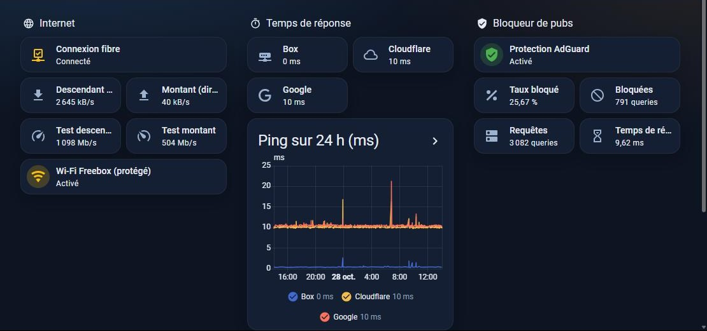
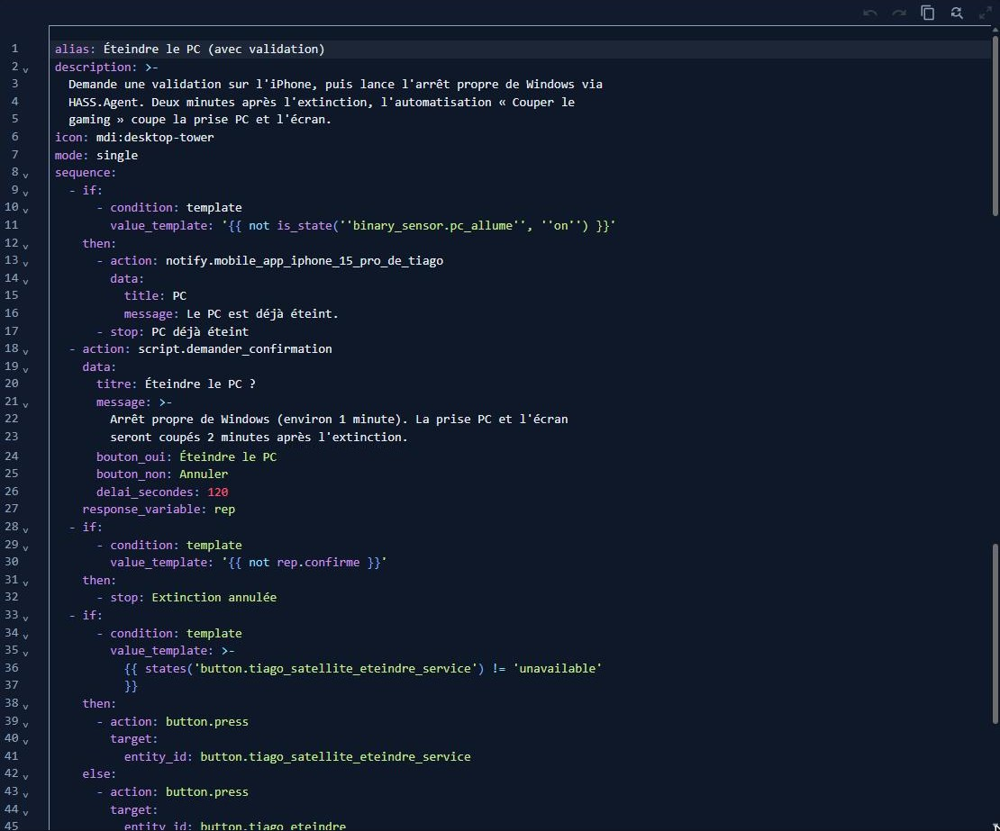
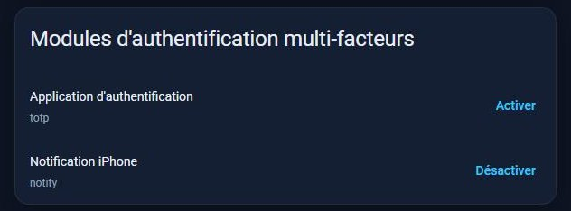
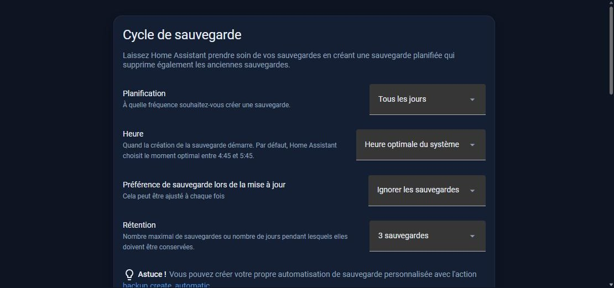
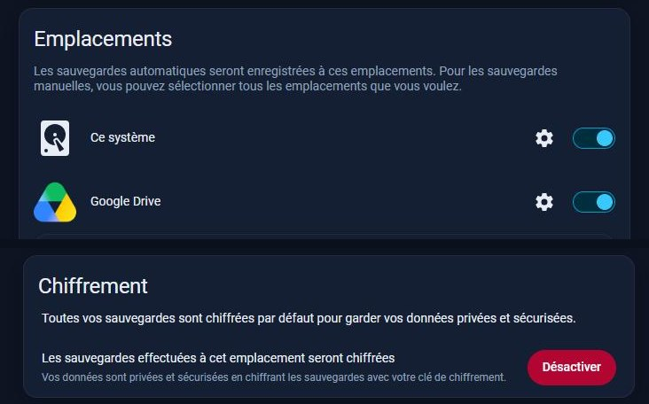
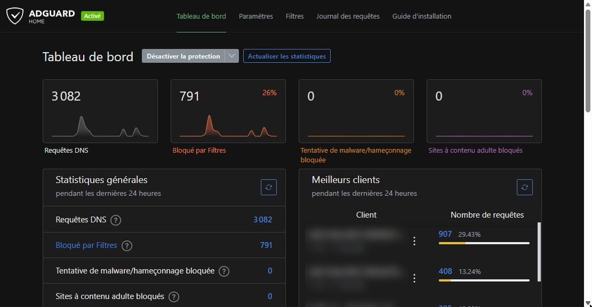
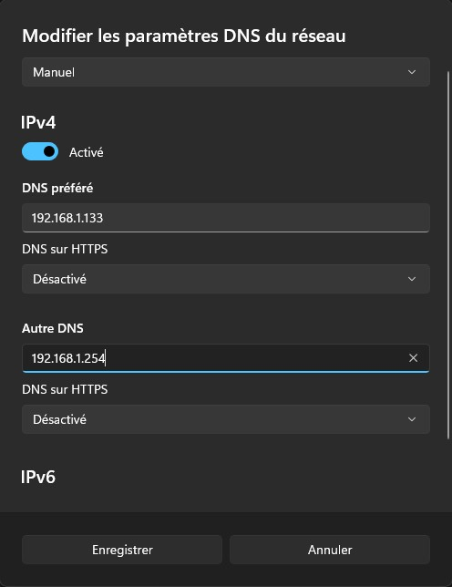
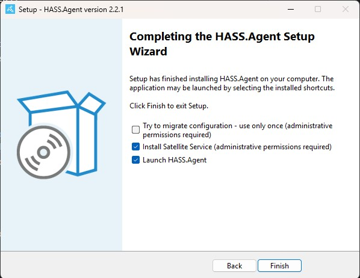
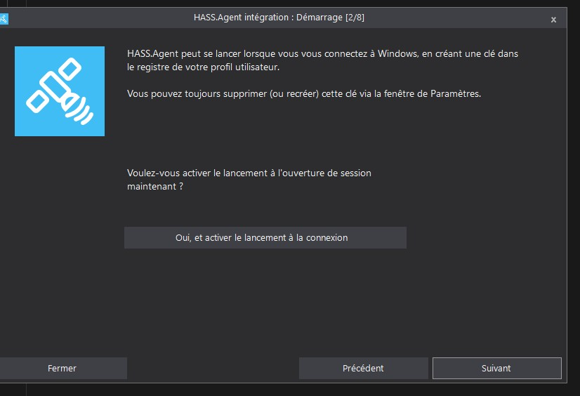

Contexte et objectifs
Je voulais piloter ma chambre et mon setup depuis mon téléphone et à la voix, et surtout pouvoir allumer et éteindre mon PC à distance pour travailler dessus de n'importe où. J'en ai fait un terrain d'entraînement : traiter ce serveur comme un vrai service, avec les mêmes exigences qu'en entreprise.
- Piloter — lumière, TV, écran et PC depuis l'iPhone (application et widget) et par Google Assistant.
- Ne jamais éteindre le PC par erreur — toute extinction doit être validée par une notification sur mon iPhone.
- Accéder à distance en sécurité — HTTPS avec certificat, VPN, double authentification.
- Protéger le réseau — un DNS qui bloque publicités et traqueurs.
- Ne rien perdre — des sauvegardes automatiques, chiffrées, dont une copie hors du Raspberry Pi.
Architecture
Le Raspberry Pi est posé près de la Freebox, dans une autre pièce que ma chambre. Survolez ou touchez un élément du schéma pour afficher son rôle.
Raspberry Pi 5 — Home Assistant OS
Installé le 14/09/2026. Modules : AdGuard Home (DNS qui bloque pubs et traqueurs), Mosquitto (MQTT), éditeur de fichiers. Connexion protégée par double authentification sur l'iPhone.
Composants
| Élément | Rôle | Intégration |
|---|---|---|
| Raspberry Pi 5 (4 Go, microSD) | Serveur Home Assistant OS | Adresse fixe par bail DHCP statique sur la Freebox |
| AdGuard Home | DNS filtrant du réseau | Module Home Assistant, DNS du PC réglé dessus |
| Mosquitto | Messagerie MQTT entre le Pi et le PC | Module Home Assistant, utilisateur dédié |
| HASS.Agent 2.2.1 | État du PC, capteurs, commande d'extinction | Installé sur le PC, relié en MQTT |
| Multiprise Meross MSS425F | Prises TV, écran et PC | HomeKit |
| Ampoule LSC Smart Connect | Lumière blanche ou couleur | Tuya (Tuya Developer Platform) |
| Google Home Mini, TV Android | Voix, multimédia | Google Cast, Android TV |
| Tailscale, RustDesk | VPN et prise en main du PC à distance | Sur le PC et les appareils |
Réalisation
- Installation — Home Assistant OS installé le 14/09/2026 sur le Raspberry Pi 5. Bail DHCP statique sur la Freebox pour que le Pi garde toujours la même adresse.
- Intégration des appareils — ampoule LSC via Tuya, Google Home Mini, TV Android et multiprise Meross en HomeKit. Entités renommées clairement (Écran, Télé, Lumière…) et rangées dans la pièce « Chambre ».
- Accès distant — nom de domaine DuckDNS et certificat Let's Encrypt pour l'accès HTTPS, validé depuis mon téléphone en 4G. Commande vocale par Google Assistant, configurée dans Google Cloud Console, sans abonnement Nabu Casa. Tailscale pour un accès VPN.
- DNS filtrant — AdGuard Home sur le Pi. Sur le PC, DNS réglé à la main sur AdGuard Home, avec la Freebox en DNS secondaire.
- Pilotage du PC — allumage : la prise du PC est coupée puis remise, et le réglage BIOS « AC Back » démarre le PC au retour du courant. Extinction propre : HASS.Agent reçoit l'ordre par MQTT (Mosquitto, utilisateur dédié), seulement après validation sur l'iPhone ; une automatisation coupe ensuite l'écran et la prise du PC. Prise en main à distance avec RustDesk.
- Scénarios — trois scripts : « Tout allumer », « Mode jeu » (écran et PC, sans la TV) et « Tout couper » (avec validation). Interrupteurs « Télé » et « Mode couleur » pour un pilotage simple.
- Interfaces — widget iPhone à 8 commandes, et tableau de bord « Maison » avec un thème et des cartes personnalisées en JavaScript (ciel animé selon le soleil, météo, boutons de scénarios).
- Sécurisation — double authentification par notification iPhone, sauvegardes automatiques chiffrées sur le Pi et sur Google Drive (voir plus bas).
Sécurité et continuité de service
J'ai listé les risques principaux et la mesure mise en place pour chacun.
| Risque | Mesure |
|---|---|
| PC éteint par erreur (commande vocale mal comprise, mauvais bouton) | Validation obligatoire par notification iPhone ; le bouton brut d'extinction de HASS.Agent est masqué |
| Mot de passe du compte volé, alors que l'interface est accessible depuis Internet | Double authentification : un code de connexion est envoyé sur mon iPhone |
| Carte microSD du Pi en panne, mauvaise manipulation | Sauvegarde automatique chaque nuit, chiffrée, 3 versions gardées, copie hors site sur Google Drive |
| Perte de la clé de chiffrement des sauvegardes | Clé et kit d'urgence conservés hors du Pi |
| Publicités, traqueurs, domaines malveillants | AdGuard Home comme DNS du PC, en IPv4 et en IPv6 |
| Accès distant en clair | HTTPS avec certificat Let's Encrypt ; Tailscale pour le reste |
Tests
| Test | Méthode | Résultat |
|---|---|---|
| Allumage et extinction du PC à distance | Depuis Home Assistant, avec validation sur l'iPhone | Validé le 28/10/2026 |
| PC déjà allumé | Lancer l'allumage alors que le PC tourne | Le script s'arrête sans couper la prise |
| Sauvegarde automatique | Contrôle de l'état des sauvegardes le 28/10/2026 | Réussie, enregistrée sur le Pi et Google Drive |
| Sauvegarde hors site | Sauvegarde de test lancée à la main | 43 Mo, présente sur le Pi et Google Drive (28/10/2026) |
| Double authentification | Activation du module sur mon compte | Code reçu en notification sur l'iPhone et accepté |
| Prise en main du PC à distance | RustDesk via Tailscale depuis un PC portable en partage de connexion 4G | OK |
| Accès HTTPS distant | Depuis le téléphone en 4G, hors du réseau de la maison | OK |
Difficultés rencontrées
- Fuite DNS en IPv6 — le PC continuait d'utiliser le DNS de la box en IPv6 et contournait AdGuard Home ; j'ai aussi réglé le DNS IPv6 sur le Pi.
- AdGuard Home injoignable — il n'écoutait que sur l'adresse locale du Pi (127.0.0.1) ; il écoute maintenant sur l'adresse du Pi dans le réseau.
- Démarrage par la prise — une coupure de 4 secondes était trop courte pour que le PC redémarre ; elle a été portée à 20 secondes.
- Extinction sans validation — le bouton créé automatiquement par HASS.Agent éteignait le PC sans passer par la notification ; je l'ai masqué pour que toute extinction passe par le script validé.
- Capteur de température GPU — il ne remontait pas de valeur ; j'utilise la charge du GPU à la place.
Méthode de travail
Je définis le besoin et les règles (par exemple : aucune extinction sans ma validation), je m'appuie sur une IA pour écrire les automatisations et le code, puis je teste chaque fonction avant de la garder. Les étapes sensibles restent entre mes mains : publication de l'application Google, clé de chiffrement des sauvegardes, codes de connexion.
Évolutions prévues
- Caméra de surveillance locale — intégrer une petite caméra dans Home Assistant avec un stockage des images en local, sans fuite vers le cloud.
- Sauvegardes vers mon NAS — une fois le NAS fait maison terminé.
- Réseau séparé pour les objets connectés.
- Wake-on-LAN quand le PC sera relié en câble RJ45.
Compétences mobilisées (bloc 1, épreuve E5)
La compétence 6.1 est reportée dans mon tableau de synthèse E5. Les autres codes (contour seul) montrent des pratiques liées, sans être reportées dans le tableau.
Preuves












Captures réalisées sur mes appareils en octobre 2026. Informations masquées : l'indicateur de présence sur le tableau de bord et les adresses IPv6 publiques dans AdGuard Home.